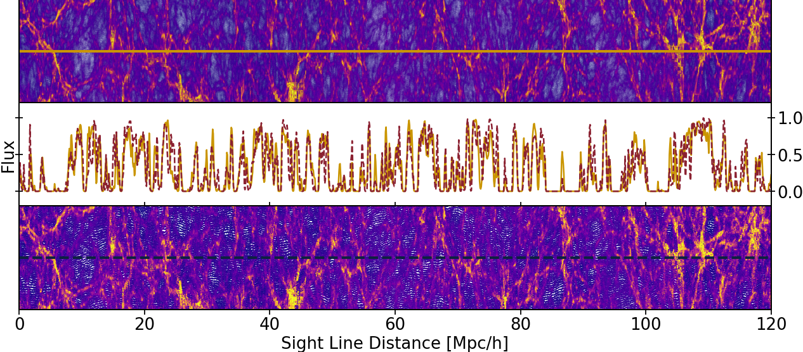

lyman-α forest emulator
The Lyman-α forest is a series of absorption features in the spectrum of quasars. As light travels from the quasar towards us, two effects combine to create the observed forest: the expansion of the universe redshifts the spectrum, and these redshifted photons are absorbed and scattered by hydrogen in the intergalactic medium (IGM). Since overdensities will absorb more photons, the Lyman-α forest is effectively a one-dimensional density map along the line of sight.
The figure below is an example of the observed Lyman-α forest, from O'Meara et al. APJ 552 718, arXiv: 0011179.

The figure below shows a snapshot of the gas density and temperature (colors) for a lower resolution (bottom panel) and a higher resolution (top panel) simulation. The middle panel shows the Lyman-α forest spectrum extracted from the these simulations, along the line shown passing through the other panels.

Because Lyman-α forest observations probe non-linearities (the overdensities along the line of sight), simulations are required to interpret observations. Furthermore, to fully exploit the Lyman-α forest requires a suite of simulations with varying astrophysical and cosmological parameters. This requires many high resolution simulations.
To get around this computational bottleneck, I built a multi-fidelity Gaussian process emulator for the Lyman-α forest. A multi-fidelity emulator is a machine learning method that can be trained using a few tens of low resolution simulations along with just a couple of high resolution simulations to predict high resolution simulation outputs without actually having to run them.
Above left are the input parameters for the simulations I ran for this emulator, with the grey crosses representing low resolution simulations and the red circles the high resolution simulations. Above right are the mean IGM temperatures for each of these simulations for a range of redshifts. The bottom panel shows the ratio of the low to high resolution temperatures for simulations run with the same cosmological and astrophysical parameters. This simulation suite, named PRIYA, was written up in arXiv: 2306.05471
I developed a framework using this multi-fidelity emulator along with observations from BOSS (Baryon Oscillation Spectroscopic Survey) to conduct parameter inference using Markov Chain Monte Carlo. The inference includes astrophysical (midpoint of hydrogen reionization, start and end of helium reionization) and cosmological (the amplitude and slope of the primordial power spectrum) parameters. The results of this inference can be found in . . .